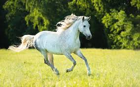
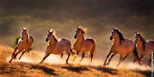
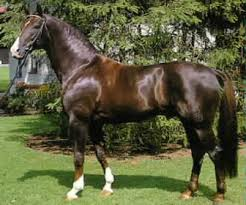
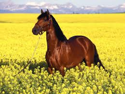
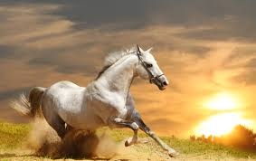

La evolución del caballo puede seguirse a través del registro fósil llamado Eohippus, un pequeño mamífero herbívoro que vivió durante el Eoceno, hace 55 millones de años, en América del Norte. Se supone que de él descienden todos los équidos posteriores, incluido el género Equus.
El Hyracotherium fue alguna vez considerado como el miembro más antiguo de la familia Equidae antes de que su especie tipo, H. leporinum, fuera reclasificada como un paleotérido, un tipo de perisodáctilos relacionados tanto con los équidos como con los brontotéridos.6 A primera vista era similar a un perro pequeño.
La evolución posterior de Hyracotherium le hizo aumentar su altura hasta los 115 cm y perder sus dedos hasta hacerse monodáctilo, es decir, con un solo dedo. Poco a poco, su único dedo se endurecería mediante mutaciones, hasta desarrollar cascos que les permitían huir de los depredadores. En esa época aparecieron a la vez en Norteamérica y Eurasia diversas especies y géneros relacionados.
Parece ser que las especies euroasiáticas desaparecieron; sin embargo, las especies americanas dieron lugar durante el Oligoceno al género Mesohippus del tamaño de una gacela, que tenía sólo 3 dedos en las patas delanteras y que ya presentaba pies con forma de casco.7
Algo más tarde, en el Mioceno, a Mesohippus le sucedió Hypohippus y Anchitherium; se cree que ambas especies colonizaron después Eurasia desde América del Norte. Otros descendientes de Mesohippus fueron Miohippus y Merychippus; este último género desarrolló dientes con coronas muy altas, lo que le permitió, a diferencia de Hyracotherium, que pastaba hierba, ramonear las hojas y brotes de árboles y arbustos. Entre los descendientes de Merychippus estaba Hipparion, que durante el Plioceno se desplazó y expandió desde Norteamérica hasta Eurasia, y Pliohippus (primer antepasado de un solo dedo), antecesor de Pleshippus y de su sucesor, el caballo moderno, es decir, el género Equus, que apareció hace 5 millones de años.
CABALLOS

El caballo es un mamífero de la familia de los équidos. Puede ser domesticado o vivir en estado salvaje. A la hembra se la denomina yegua, a la cría macho se le llama potro, y a la cría hembra se le llama potranca. Existen 86 razas distintas de caballos en el mundo.
CABALLO

PORTE:La altura de los caballos, como en los demás cuadrúpedos, se mide hasta la cruz, donde encuentran las escápulas, es decir el punto donde se une el cuello con el lomo del caballo. Se elige como referencia este punto por ser una altura estable que no puede subir o bajar como la cabeza o el cuello.
El tamaño de los caballos varía considerablemente entre las distintas razas, y también está influido por la nutrición. Según su porte las razas de caballo suelen dividirse en tres grupos:
pesados o de tiro;
ligeros o de silla;
ponis y razas miniatura.
CABALLO

Los cascos son fundamentales para la estructura de las patas de los caballos. Los cascos de los caballos en las falanges distales, el equivalente a las puntas de los dedos en los humanos, en el interior están recubiertas de cartílago y otros tejidos blandos especializados ricos en sangre como el tejido laminar. El exterior de los cascos está formado por un tejido córneo similar al de las uñas de los humanos.El resultado final es que un caballo que pesa una media de 500 kg29 es capaz de desplazarse sobre los mismos huesos que cuando un humano va de puntillas. La razón por la que a los caballos se les ponen herraduras es que en cautividad desgastan más rápidamente los cascos, por la dureza del pavimento y por el sobrepeso que llevan, que en libertad desplazándose por la tierra. Los cascos crecen continuamente y en estado natural se desgastan solos, pero necesitan ser recortados cada cinco o seis semanas en los caballos herrados.
CABALLO

Los caballos han adaptado sus dientes para pastar hierba. Los caballos tienen un mínimo de 36 dientes (12 incisivos y 24 molares). Un caballo adulto tiene 12 incisivos, adaptados para morder y arrancar la hierba y demás vegetación, en la parte frontal de la boca. Tienen 24 dientes adaptados a masticar, los premolares y molares, en la parte posterior de la boca. Los machos adultos tienen cuatro dientes adicionales justo tras los incisivos denominados «colmillos» y que no les saldrán hasta que tengan cuatro o cinco años de edad. Algunos caballos, tanto machos como hembras pueden desarrollar de uno a cuatro dientes vestigiales muy pequeños delante de los molares, que generalmente se les quitan porque pueden interferir con el bocado. Este espacio entre incisivos y premolares está vacío y es donde se coloca el bocado del arreo del caballo.
Los dientes de los caballos continúan creciendo durante la mayoría de su vida para que puedan pastar correctamente. Los incisivos presentan distintos patrones de crecimiento y desgaste según las edades de los caballos, además del ángulo que presentan las superficies de mordedura, por lo que pueden ser utilizados para medir de forma aproximada la edad del caballo, aunque la dieta y los cuidados a los que son sometidos varían notablemente en las tasas de desgaste.
CABALLO